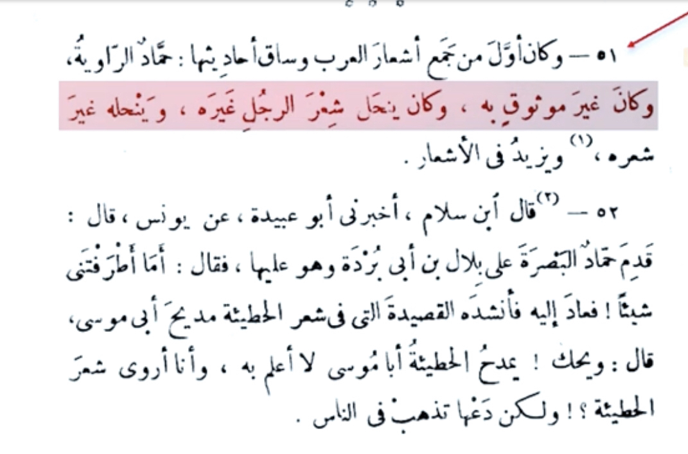

Quran plagarized from poetry
This claim comes from imrul qais poems and umayah ibn abi al-salt
However today we are going to be bringing evidences that these poems are forged and we will also prove Qūr’ānīc passage isn’t like poetry and lastly we would refute attempts making like the Qūr’ānīc passage
First off imrul qais
It isn’t found in his library at all
Meaning this is a sign it is forged
Translation: “Al-Āsmā’ī said everything we have from the poems of imrul qais is trough hamada al-rawiayh and Abu al-Taib said hamad wasn’t thiqah (trustworthy)”
-Source: Al-Muzhir fi ulum al-lugha volume 2 page number 406
Translation: “and from the first who collected arab poems was hamadah al-rawiyah and he wasn’t trustworthy and he use to falsely attribute poems to people and adds to them”
-Source: Tabaquat fuhul al-shu’araa ibn salam page number 48 person number 51

Translation: And tha’lab said: hamada al-rawiyah was famous of lying in narration and making up poems and adding to them even it was said he ruined poetry”
-Source: Lisan al-Mizan ibn hajar (RH) volume 3 page number 277 person number 2744 by name “hamada al-rawiyah”
So when was hamada born
He was born in the abbasid raign long after the death of the prophet 156-90(by max)=66 A.H
(syar a’laam al-nubalaa 7/158)
Now we proved the Shi’r of imrul qais is forged and it was actually then copied from the Qūr’ānīc passage
Translation: “under point 4 the thing on the poems falsely attributed to umayah and this story of the poems of umayah sadly some are false meaning forged and some are authentic and from the basic things to know if a poem is forged is that it contains Qūr’ān in it”
-Source: Shuruh diwan umayah bin abi Al-salt page number 10-11
Now the last passage debunks both so called poems because if they contain Qūr’ān it is basically forged if it is pre-Islamic period of ignorance poem
Translation: “Cl huart claimed that the poems of umayah are the source of the Qūr’ān and that is false because as for Andrea said these most be forged poems”
-Source: Tarikh al-adab al-arabi volume 1 about umayah
 I mean the first poets understand the challenge as they said
Translation for the last one: “there was a very long debate umaya started with his poems then prophet muhammed recited the 36th chapter of the Qūr’ān umaya walked away Quraish followed him then asked what do you say about him he said I testify he is on the truth”
-Source: Al-Bidayah w al-nihaya ibn kathir (RH)
I mean the first poets understand the challenge as they said
Translation for the last one: “there was a very long debate umaya started with his poems then prophet muhammed recited the 36th chapter of the Qūr’ān umaya walked away Quraish followed him then asked what do you say about him he said I testify he is on the truth”
-Source: Al-Bidayah w al-nihaya ibn kathir (RH)
 Now look at the biggest arab poets said about the Qūr’ān al-bayhaqui has a whole chapter about pagans testifying the greatness of the Qūr’ānīc passage
For Quran not like poetry
For 1400 years they can’t beat the challenge who else would it be from if not an all mighty God
End
Abu Sa’ud, in his tafseer, mentions that not only was composing poetry unbefitting for the Prophet (Allah bless him and grant him peace), but that even the ability to write poetry wasn’t part of his make-up, and to prove this conclusively, Allah Ta’ala made him unlettered, unlike the poets.
Ibn Katheer says he (Allah bless him and grant him peace) didn’t memorize a single complete stanza of poetry on its exact meter, and whenever he recited something, he would either not complete the stanza, or transpose some of the words.
Abu Sa’ud notes that in the rare times when the Prophet (Allah bless him and grant him peace) did seem to recite a new couplet, he was simply speaking without intending to rhyme, and the words only seemed like poetry. Still, any word that he (Allah bless him and grant him peace) spoke was more beautiful than the best poetry.
[DEBUNKED] The Quran Plagiarizes from the Poet by Farid Responds
https://youtu.be/KUodyNkWWVo
One of the poets utbah bin rabi’ah said:
Narrated Jabir bin Abdullah: “
Abu Jahl and his people from Quraish said the issue about muhammed has grown among us if only we found a man knowledgeable in divination and poetry so he talks to him to get knowledge about his case. Utbah then Said I heard him say divination poetry and magic and I have from that knowledge it wouldn’t be a secret to me if he was from that. Utbah said to the prophet O Muhammed are you better or Hashin are better or Umm abdulmutalib so the prophet didn’t answer him so Utbah said why do you curse our Gods and class deviants our parents, If you want Power we would contract you to be our leader so you’ll be a leader as long as you stay, and if you were lustful we would marry you to 10 women you choose from any girl of Quraish and if you want money we would gather you money from ours that be sufficient for you and after all that and the prophet (PBUH) was silent and not speaking so when he was done the prophet (PBUH) read “Ḥâ-MÄ©m. ˹This is˺ a revelation from the Most Compassionate, Most Merciful. ˹It is˺ a Book whose verses are perfectly explained—a Quran in Arabic for people who know, untill he reached his Saying If they turn away, then say, ˹O Prophet,˺ “I warn you of a ˹mighty˺ blast, like the one that befell ’Ȃd and Thamûd.†So Utbah put his hand over his mouth and told him to stop and asked him to stop or else he wouldn’t return to his people. … when utbah came back to the council of Quraish he said By God it is not Magic nor is it poetry nor is it divination.”
[Evidences of Prophethood by Al-Bayhaqui (2/202-204) classed as a Sahih sanad by al-hakim]
https://quran.com/surah/41/info
Another person unais who was a poet said
Walid ibn al-Mughirah who was top tier poet said
al-Ālūsī al-Baghdādī (d. 1270 AH) writes in his exegesis:
« there is no origin for it, and anyone who has the slightest knowledge of the words of the Arabs it wouldn’t be hidden from him that the author of these words is born after Islam who wanted to plagiarize (I.e the Qur’ān) and not living in the pre Islamic period of ignorance. »
•📖 {Rūh al-Ma'ānī | 28/302}
Rashid Riḍā (d. 1345 AH) writes:
If it weren't for the fact that some laypeople read poetry, I wouldn't need to point out that this poem could not have been written by an Arab, but rather by a weak student or beginner in the language from the effeminate city dwellers who love young boys. The style, expressions, Arabic language and subject matter are all awkward and devoid of the poetry of the Arabs, particularly the ignorant among them. How can it be considered the work of someone who carries their banner and is the most eloquent of them? Suppose Imru' al-Qays, the leader of women, was flirting with young boys - and let's assume it's a matter of debate - but can you easily say that the Arab poets, such as the one who said "Let us weep over the memory of a beloved and a home," said "Ahuwar has become obsessed with his description, sleepy-eyed with his eyes, and the language becomes narrow for him, so he repeats the same meaning in the verse twice, saying: Ahuwar with his eyes Haar"?
Do you believe that an Arab says: "The moon split from the gazelle," which is a meaningless statement? What does "the hour approached in the house" mean? And what holiday did the young boys dress up for during the Jahiliyyah period? Would your taste allow you to believe that Imru' al-Qays said: "He commanded me, so I took it, and he went crazy," and what did he take after the throw, and what does taking mean? And does Imru' al-Qays say: "His beard is missing," describing a group in the singular? Does an Arab compare the rise of hair on the cheek to a secret at night, even though he walks in the light of day? And how do you understand and parse his statement: "By morning and night, how many flowers did this light scatter"? And does an Arab, or an eloquent Arabized person, say to his beloved: "The apology split his cheek"?
After these sufficient indications that the poetry is not for the ignorant or experienced Arabs, but rather for the effeminate and weak of the later generations, I allow you to assume that it is for Imru' al-Qays out of respect for the author of the book "Tanoor al-Afham." But can anyone honor and respect him by saying that the words marked are the eyes of the verses of the Quran? And there is no "He commanded me, so I took it, and he went crazy" in the Quran, as we mentioned before, and his saying "He left me like the decaying grass" is the same, and the noble verse is: "We sent upon them a single scream, and they became like the trampled straw" (54:31), so the meaning and verse are different. There is only a mention of the simile in the verse, and it is not in its proper place, because likening a person to decaying grass gathers the owner of the herd for his sheep, and it has no meaning. This simile is good for a nation that has perished and disappeared, as in the verse. Also, there is no "The hour was the most terrible and the most significant" in the Quran, but rather "They will be defeated and will turn their backs; rather, the Hour is their appointed time, and the Hour is more disastrous and more bitter" (54:45-46). Here, Wahin and Eidan are the worst of them, and it is appropriate to say that it is the most terrible and significant. There is nothing in the verse that gives precedence to anything.
And know that this poetry is from the words of the later effeminate poets, it is the lowest of what they composed in terms of imitation, and it was not attributed to Imru' al-Qays except by the most ignorant of people. Furthermore, the meaning is different and the composition is different, so how can the author - any author of the book "Tanoor al-Afham" - claim that these words are from the verses of the Quran and are not different in meaning? Even if we assume that these Arabic words were used in a foolish meaning in poetry that lacked eloquence, and then they appeared in the Arabic Quran with different meanings and a different style, and they were verses of eloquence as well as being ridiculous in poetry, is it appropriate for a rational person to say that the author of these words of admonition and reprimand was inspired by this effeminate poetry of loving young boys, and that the meaning is the same and not different? So, whoever considers the derivation of these people and their frivolity in criticizing and objecting to the Quran, let him consider this. And whoever wants to laugh at the blatant criticism of its author and raise the status of its opponent, let him laugh. And whoever wants to weigh the bias of these Christians with this scale, let him weigh it, and indeed it is outweighed by the bias of the worlds.
•📓 {Al-Manār | 7/177-182}
The ebn maryam site totally destroyed the doubt (Arabic only)
https://www.ebnmaryam.com/vb/showthread.php?t=19370
Now look at the biggest arab poets said about the Qūr’ān al-bayhaqui has a whole chapter about pagans testifying the greatness of the Qūr’ānīc passage
For Quran not like poetry
For 1400 years they can’t beat the challenge who else would it be from if not an all mighty God
End
Abu Sa’ud, in his tafseer, mentions that not only was composing poetry unbefitting for the Prophet (Allah bless him and grant him peace), but that even the ability to write poetry wasn’t part of his make-up, and to prove this conclusively, Allah Ta’ala made him unlettered, unlike the poets.
Ibn Katheer says he (Allah bless him and grant him peace) didn’t memorize a single complete stanza of poetry on its exact meter, and whenever he recited something, he would either not complete the stanza, or transpose some of the words.
Abu Sa’ud notes that in the rare times when the Prophet (Allah bless him and grant him peace) did seem to recite a new couplet, he was simply speaking without intending to rhyme, and the words only seemed like poetry. Still, any word that he (Allah bless him and grant him peace) spoke was more beautiful than the best poetry.
[DEBUNKED] The Quran Plagiarizes from the Poet by Farid Responds
https://youtu.be/KUodyNkWWVo
One of the poets utbah bin rabi’ah said:
Narrated Jabir bin Abdullah: “
Abu Jahl and his people from Quraish said the issue about muhammed has grown among us if only we found a man knowledgeable in divination and poetry so he talks to him to get knowledge about his case. Utbah then Said I heard him say divination poetry and magic and I have from that knowledge it wouldn’t be a secret to me if he was from that. Utbah said to the prophet O Muhammed are you better or Hashin are better or Umm abdulmutalib so the prophet didn’t answer him so Utbah said why do you curse our Gods and class deviants our parents, If you want Power we would contract you to be our leader so you’ll be a leader as long as you stay, and if you were lustful we would marry you to 10 women you choose from any girl of Quraish and if you want money we would gather you money from ours that be sufficient for you and after all that and the prophet (PBUH) was silent and not speaking so when he was done the prophet (PBUH) read “Ḥâ-MÄ©m. ˹This is˺ a revelation from the Most Compassionate, Most Merciful. ˹It is˺ a Book whose verses are perfectly explained—a Quran in Arabic for people who know, untill he reached his Saying If they turn away, then say, ˹O Prophet,˺ “I warn you of a ˹mighty˺ blast, like the one that befell ’Ȃd and Thamûd.†So Utbah put his hand over his mouth and told him to stop and asked him to stop or else he wouldn’t return to his people. … when utbah came back to the council of Quraish he said By God it is not Magic nor is it poetry nor is it divination.”
[Evidences of Prophethood by Al-Bayhaqui (2/202-204) classed as a Sahih sanad by al-hakim]
https://quran.com/surah/41/info
Another person unais who was a poet said
Walid ibn al-Mughirah who was top tier poet said
al-Ālūsī al-Baghdādī (d. 1270 AH) writes in his exegesis:
« there is no origin for it, and anyone who has the slightest knowledge of the words of the Arabs it wouldn’t be hidden from him that the author of these words is born after Islam who wanted to plagiarize (I.e the Qur’ān) and not living in the pre Islamic period of ignorance. »
•📖 {Rūh al-Ma'ānī | 28/302}
Rashid Riḍā (d. 1345 AH) writes:
If it weren't for the fact that some laypeople read poetry, I wouldn't need to point out that this poem could not have been written by an Arab, but rather by a weak student or beginner in the language from the effeminate city dwellers who love young boys. The style, expressions, Arabic language and subject matter are all awkward and devoid of the poetry of the Arabs, particularly the ignorant among them. How can it be considered the work of someone who carries their banner and is the most eloquent of them? Suppose Imru' al-Qays, the leader of women, was flirting with young boys - and let's assume it's a matter of debate - but can you easily say that the Arab poets, such as the one who said "Let us weep over the memory of a beloved and a home," said "Ahuwar has become obsessed with his description, sleepy-eyed with his eyes, and the language becomes narrow for him, so he repeats the same meaning in the verse twice, saying: Ahuwar with his eyes Haar"?
Do you believe that an Arab says: "The moon split from the gazelle," which is a meaningless statement? What does "the hour approached in the house" mean? And what holiday did the young boys dress up for during the Jahiliyyah period? Would your taste allow you to believe that Imru' al-Qays said: "He commanded me, so I took it, and he went crazy," and what did he take after the throw, and what does taking mean? And does Imru' al-Qays say: "His beard is missing," describing a group in the singular? Does an Arab compare the rise of hair on the cheek to a secret at night, even though he walks in the light of day? And how do you understand and parse his statement: "By morning and night, how many flowers did this light scatter"? And does an Arab, or an eloquent Arabized person, say to his beloved: "The apology split his cheek"?
After these sufficient indications that the poetry is not for the ignorant or experienced Arabs, but rather for the effeminate and weak of the later generations, I allow you to assume that it is for Imru' al-Qays out of respect for the author of the book "Tanoor al-Afham." But can anyone honor and respect him by saying that the words marked are the eyes of the verses of the Quran? And there is no "He commanded me, so I took it, and he went crazy" in the Quran, as we mentioned before, and his saying "He left me like the decaying grass" is the same, and the noble verse is: "We sent upon them a single scream, and they became like the trampled straw" (54:31), so the meaning and verse are different. There is only a mention of the simile in the verse, and it is not in its proper place, because likening a person to decaying grass gathers the owner of the herd for his sheep, and it has no meaning. This simile is good for a nation that has perished and disappeared, as in the verse. Also, there is no "The hour was the most terrible and the most significant" in the Quran, but rather "They will be defeated and will turn their backs; rather, the Hour is their appointed time, and the Hour is more disastrous and more bitter" (54:45-46). Here, Wahin and Eidan are the worst of them, and it is appropriate to say that it is the most terrible and significant. There is nothing in the verse that gives precedence to anything.
And know that this poetry is from the words of the later effeminate poets, it is the lowest of what they composed in terms of imitation, and it was not attributed to Imru' al-Qays except by the most ignorant of people. Furthermore, the meaning is different and the composition is different, so how can the author - any author of the book "Tanoor al-Afham" - claim that these words are from the verses of the Quran and are not different in meaning? Even if we assume that these Arabic words were used in a foolish meaning in poetry that lacked eloquence, and then they appeared in the Arabic Quran with different meanings and a different style, and they were verses of eloquence as well as being ridiculous in poetry, is it appropriate for a rational person to say that the author of these words of admonition and reprimand was inspired by this effeminate poetry of loving young boys, and that the meaning is the same and not different? So, whoever considers the derivation of these people and their frivolity in criticizing and objecting to the Quran, let him consider this. And whoever wants to laugh at the blatant criticism of its author and raise the status of its opponent, let him laugh. And whoever wants to weigh the bias of these Christians with this scale, let him weigh it, and indeed it is outweighed by the bias of the worlds.
•📓 {Al-Manār | 7/177-182}
The ebn maryam site totally destroyed the doubt (Arabic only)
https://www.ebnmaryam.com/vb/showthread.php?t=19370